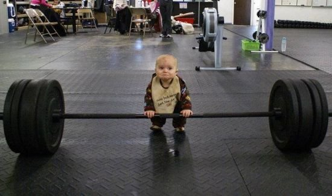

Rövid bevezető:
Mazács Leventének hívnak és 16 éves vagyok. 2003. február 26-án születtem Budapesten. Ma már Kistarcsai vagyok ,de 14 éves koromig Pesten laktam. Ekkor jártam ki a Dr.Mező Ferenc Általános Iskolát.
Itt közepes átlaggal végeztem ,és egy 62 pontos felvételit írtam. Most pedig a Neuman János Számítástechnikai Szakközépiskolába járok.
Szabadidőmben hétköznaponként edzeni szoktam ,hétvégéken vagy melózok vagy barátokkal találkozok. Mivel szeretek kosarazni ezért haverokkal kiszoktunk járni dobálgatni a pályára.
